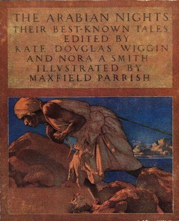

Arabian Nights

Click here for more information about the author and the tales! Click here for more information about the author and the tales! Click here for more information about the author and the tales! Click here for more information about the author and the tales!
Best Selling Books
The Story of Aladdin; or, the Wonderful Lamp
The Story of Ali Baba and the Forty Thieves
The Story of Sinbad the Voyager
The History of Codadad and His Brothers
The Story of the Fisherman and the Genie